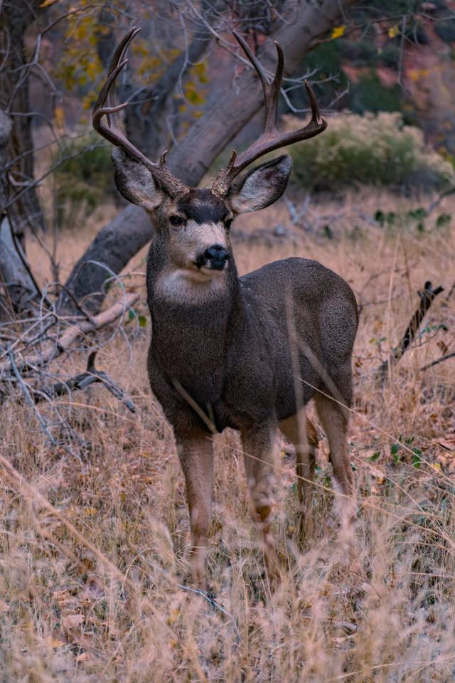
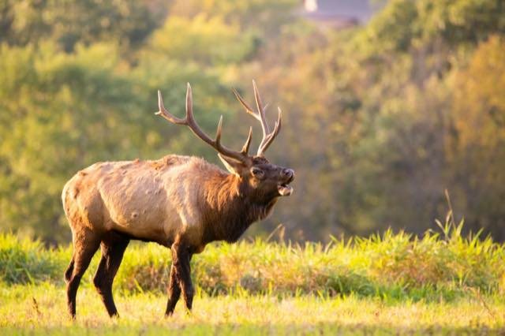
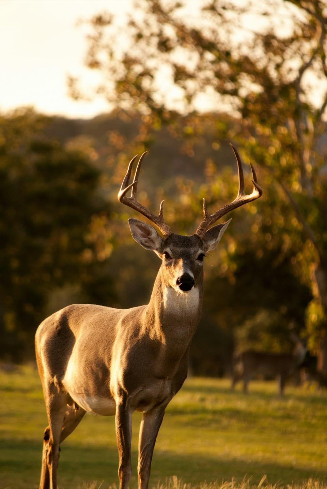
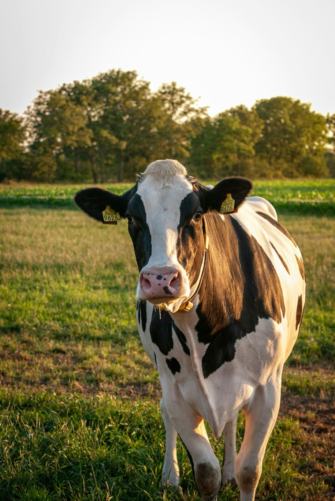

Software for private hunting ranches.
Drone surveys, fence and security checks, herd records, and guest tools, built by two hunters. We're taking on development partners now: ranches that put it to work first and help shape how it runs.
Who we are
Arches Labs is Parker DeYoung and Parker Piombo. We hunt big game and waterfowl, and most ranch software we've seen was built by people who've never sat in a blind. We'd rather build it with you.
-

Parker DeYoung
Built computer-vision systems for U.S. Air Force drones and secure, locally hosted AI. Published at EMNLP, a leading AI conference, on benchmarking AI agents and making them more reliable. Hunts waterfowl and hikes.
-

Parker Piombo
Grew up hunting and working on a ranch in Northern California, so he knows how hard the work is. Competes in sporting clays, studies business, and brings experience from Deloitte. A lifelong hunter with a love of land management.


Aerial surveys and herd tracking
A helicopter gives you one count on one day. Thermal drone flights could give you a running count by age class, so you see ratios slide before harvest does.
The trail cameras you already run feed the same count.
-
1 Mark the ground
Outline the pastures. Flight lines are spaced so nothing is missed or counted twice.
-
2 Up before first light
It launches while the ground is cold, when warm animals stand out best.
-
3 Fly the lines
Back and forth at a steady height, reading body heat in the open and along timber.
-
4 Count and sort
Each animal is mapped by species and age class. Unclear ones are flagged, not guessed.
-
5 Your herd, updated
Each count is saved next to last season's, so you spot a decline early.
How do you count your herd now, and how much do you trust the number?
Ranch security and poaching patrol
Poachers work fence lines at night, when nobody's watching. The survey drone could stand watch too.
-
1 Something crosses the line
A trail camera, gate sensor, or your geofence catches movement where nobody's expected. Patrols can also fly at random after dark.
-
2 The drone leaves the barn
It launches from a dock and flies straight there. Nobody drives out with the headlights on.
-
3 A thermal sweep finds them
Thermal sees what a spotlight won't, and tells people apart from bedded deer and elk.
-
4 The poacher is tagged
Anyone not on your guest or staff list is marked and tracked. Your own guides never trip it.
-
5 You get the alert
Location, live view, and photos on your phone. Call the warden, send someone, or dismiss it.
-
6 It follows, then heads home
It keeps its distance until they're off your ground, then docks. Video and GPS track are saved for the warden.
How we'd keep your land safe
-
You draw the boundary
Property lines, feeders, gates, and backroads.
-
It watches, it doesn't confront
It holds back and records. The next move is yours.
-
A record, not a hunch
Time, place, photos, and video a warden can act on.
-
Your herd map stays private
Where your best animals bed is what poachers want. It's your data, never sold.
How do trespassers get onto your place, and what do you do about it now? Your insight shapes what we build.
Fence line checks
Your fence protects years of investment in your herd. After every storm, a drone check finds the breaks and pins them for you, so your crew's time goes to fixing, not searching.
-
1 Fly the fence line
After a storm or on a schedule, it follows your fence all the way around.
-
2 Spot the break
Wire down, a tree on the line, a leaning post, a washout, an open gate.
-
3 Know where to go
A photo and a pin on your phone, so you know what to bring and where to drive.
-
4 Close it out
Mark it fixed. The next check confirms it held.
How do you find out a fence is down today?

CAM 6 · 10/03 · 6:12 AM New trail-cam photo Matched to Buck 14 Confirmed ✓- Sightings
- 24
- Last seen
- Oct 3, Cam 6
- Home range
- North pasture
Guide's score estimate
Herd records and inventory
Every animal's sightings, age, scores, harvest, and state paperwork, kept in one place.
-
1 A new photo comes in
It's matched to an animal you already know. You confirm it.
-
2 His record fills in
Sightings, age, and score build up season over season.
-
3 Harvest closes it out
The herd count updates and the state report is started for you.
Which records matter on your place, and which would you never open?

Back for year three. Took a 6×6 bull with Ray in 2024. Likes ground blinds.✓ Confirmed with the Harlan party and Ray
Hospitality and guest operations
Bookings, guides, cabins, and returning clients on one board, so nothing gets double-booked and no regular gets forgotten.
-
1 A booking comes in
Dates, party, and species land in one place.
-
2 It finds a guide and a bed
Only the guides and cabins that are free light up. No double-booking.
-
3 It remembers them
Last trip, last guide, and what they like, before they pull in.

Hunts built on how your animals move
The flights and cameras that count your herd also show how it moves. That could help plan each guest's hunt around what your animals are really doing.
-
Learn their patterns
Where they feed at first light, bed, and water, and how weather and pressure move them.
-
Plan the hunt around them
The right stand, the right wind, the right hours. Your guide heads out with a plan, not a guess.
-
A real hunt, not a sure thing
Patterns put your guest in the right place. They still have to close the distance and make the shot.
How do your guides scout for a guest today?

Cattle operations
Run cattle? Most of this carries over. The drone that counts deer can count pairs, and a fence check doesn't care what's behind the wire.
-
Head counts by pasture
Count pairs from the air and find the strays hung up in the brush.
-
Calving checks at night
Thermal spots a cow off by herself or a calf that's down, without the 2 AM drive.
-
Fences, gates, and water
Wire down, a gate left open, a tank running low, found before the cows find it.
-
Records that follow the cow
Tags, treatments, weights, and calving dates, ready when you sell.
What would save you the most time with your cattle?
Contact
We're looking for development partners. It starts with 30 minutes on how your place runs.
Or send a note
Six questions. The last one matters most.